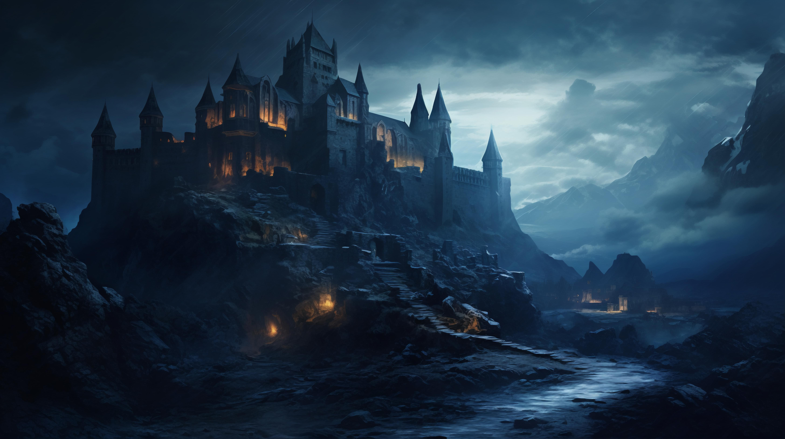
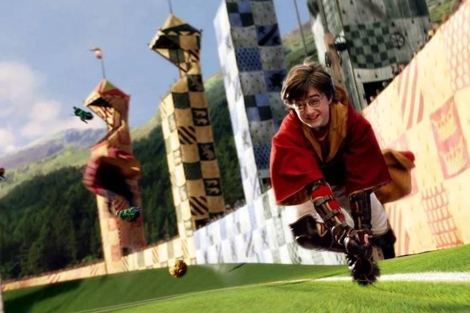
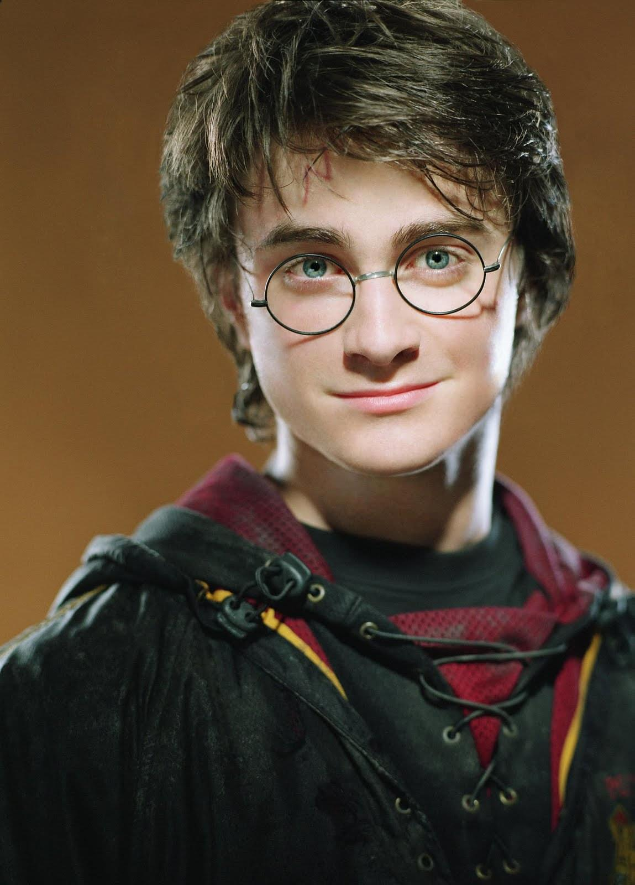
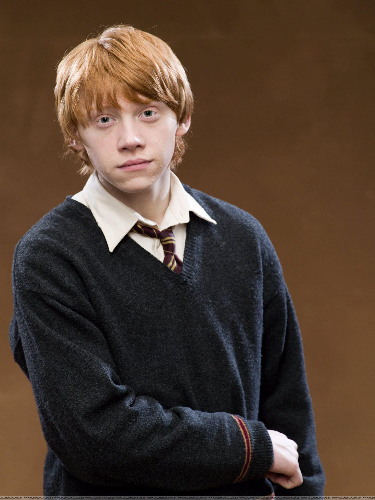
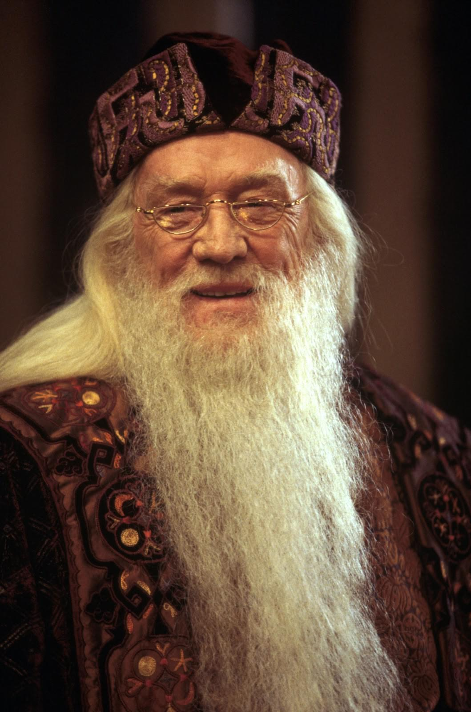
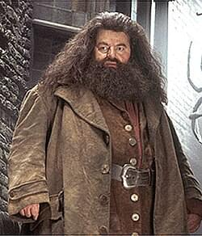

A magia está mais perto do que você imagina. Descubra histórias encantadoras, viva aventuras extraordinárias e deixe-se envolver pelos mistérios do mundo bruxo.

Embarque em uma jornada extraordinária pelo universo mágico de Harry Potter e Animais Fantásticos. Reviva aventuras inesquecíveis, descubra criaturas fascinantes, explore os mistérios da magia e encante-se com histórias que atravessam gerações. Prepare sua varinha e mergulhe em uma seleção de filmes e séries onde o extraordinário se torna realidade.



Conheça os personagens que marcaram gerações e fizeram de Hogwarts um lugar inesquecível. De Harry, Rony e Hermione aos grandes mestres e temíveis vilões, descubra suas histórias, habilidades e os desafios que enfrentaram ao longo dessa jornada mágica.

Explore o universo de Newt Scamander e seus companheiros em uma época repleta de descobertas, criaturas extraordinárias e conflitos mágicos. Conheça os bruxos e trouxas que protagonizaram aventuras e transformaram a história do mundo bruxo.

Descubra os personagens que unem os universos de Harry Potter e Animais Fantásticos. De Alvo Dumbledore a Gellert Grindelwald e Nicolas Flamel, conheça suas trajetórias, seus segredos e a importância de suas histórias na construção do mundo mágico que atravessa gerações.

O protagonista órfão conhecido pela cicatriz em forma de raio na testa e por ter sobrevivido ao ataque de Voldemort.

Melhor amigo de Harry, leal e integrante da numerosa família Weasley.
Melhor amiga de Harry e Rony, reconhecida pela inteligência e pelo domínio dos estudos mágicos.

Aluno da Sonserina e principal rival de Harry nos tempos de Hogwarts.

Diretor de Hogwarts e um dos bruxos mais poderosos e sábios do mundo mágico.

Professora de Transfiguração, chefe da Grifinória e figura firme e justa na escola.

Professor de Poções (e depois de Defesa Contra as Artes das Trevas) e chefe da Sonserina, de postura enigmática.

Guarda-caça de Hogwarts, professor de Trato das Criaturas Mágicas e amigo próximo do trio.

O Lorde das Trevas e líder dos Comensais da Morte, principal antagonista da saga.

Magizoologista britânico reservado que protege e estuda criaturas mágicas.

Auror/funcionária do Congresso Mágico dos Estados Unidos (MACUSA) com forte senso de justiça.

Padeiro trouxa (nomad) bondoso e corajoso, amigo próximo de Newt e parte da equipe de Dumbledore.

Irmã mais nova de Tina e legilimente talentosa (lê mentes), com trajetórias marcadas por escolhas complexas ao longo da trilogia.

Professor de Transfiguração em Hogwarts que recruta Newt e aliados para enfrentar Grindelwald.

Jovem com imenso poder obscuro, peça-chave nos planos de Grindelwald e na história da família Dumbledore.
Wizarding World é o universo mágico criado por J.K. Rowling, que reúne as histórias de Harry Potter e Animais Fantásticos. Nesse universo, você encontrará:
Histórias de magia, amizade, coragem e grandes aventuras.
Bruxos, criaturas mágicas e personagens inesquecíveis.
Lugares fascinantes, como Hogwarts, Hogsmeade e o Beco Diagonal.
Segredos e acontecimentos que conectam diferentes gerações do mundo bruxo.
Para acompanhar os acontecimentos do mundo bruxo em ordem cronológica, comece pela trilogia Animais Fantásticos e, em seguida, assista aos oito filmes da saga Harry Potter, seguindo a ordem de lançamento de cada franquia.
As duas sagas pertencem ao mesmo universo mágico, mas acontecem em épocas diferentes.
Animais Fantásticos explora os acontecimentos que antecedem a história de Harry Potter, acompanhando as aventuras de Newt Scamander e a ascensão de Gellert Grindelwald.
Personagens como Alvo Dumbledore e Nicolas Flamel conectam as duas histórias.
Juntas, as franquias revelam diferentes períodos, conflitos e segredos do mundo bruxo.